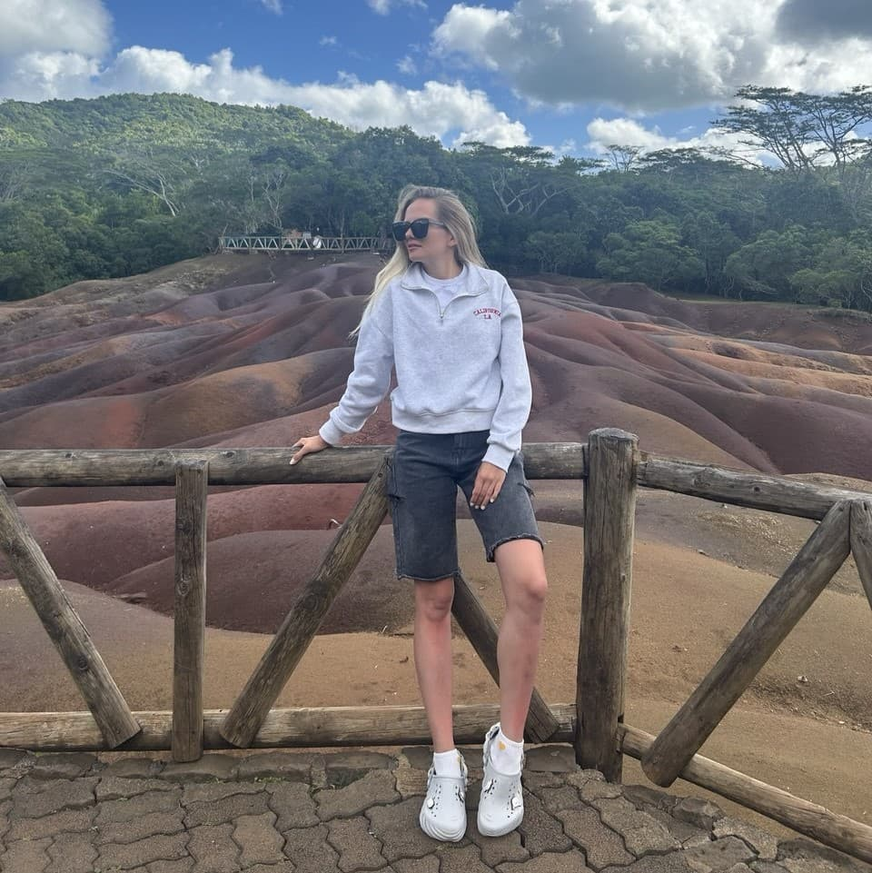
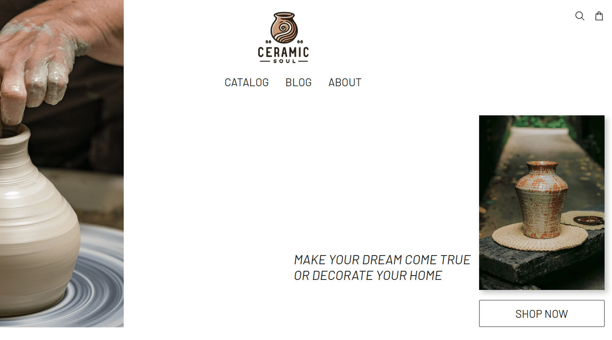
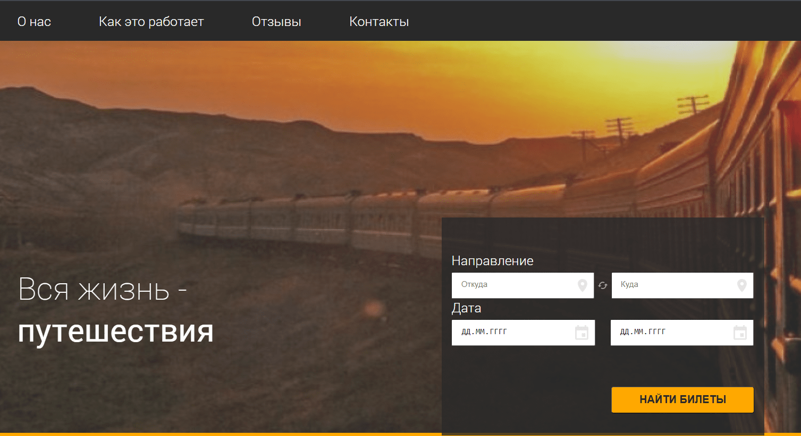
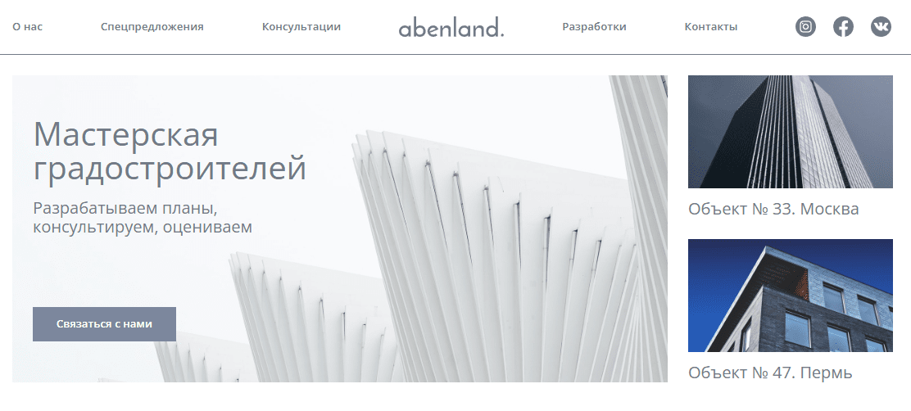

Frontend-developer


Учебный SPA-проект, реализованный с использованием Vite, JavaScript (ES6+), SCSS и HTML5. В сборке применён Rollup для оптимизации и создания компактных бандлов. Проект адаптивен и развёрнут на GitHub Pages.

Учебное SPA-приложение на React для поиска и бронирования железнодорожных билетов. Реализована маршрутизация (React Router), управление состоянием (Redux), работа с серверными данными.

Учебное одностраничное приложение (SPA), разработанное с использованием Vite, JavaScript (ES6+), SCSS и HTML5. Сборка с Rollup для оптимизации и минификации бандлов. Статические ресурсы в public, корректные пути для деплоя на GitHub Pages.